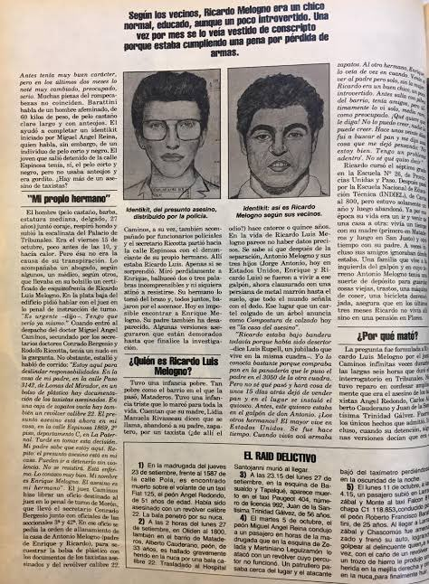

麦片
@maipianaini0930
1982年10月15日，一名年轻人前往位于布宜诺斯艾利斯的阿根廷国家司法宫，请求与负责连环杀人案的法官会面。这名年轻人声称，他20岁的弟弟里卡多·梅洛尼奥是凶手。他还说，他和父亲在梅洛尼奥的卧室里发现了一个简易的祭坛，上面放着三张身份证；这些身份证是属于马塔德罗斯被谋杀的出租车司机的

麦片
@maipianaini0930
梅洛尼奥在2010年代的一次采访中回忆说，当时他在餐厅用餐，感觉餐具好像粘在了他的手上。他并没有意识到自己的手上沾满了某位司机的鲜血。餐厅里其他出租车司机都在谈论连环杀人案，没有人注意到他沾满鲜血的双手。 https://t.co/EKIPJGbYyc